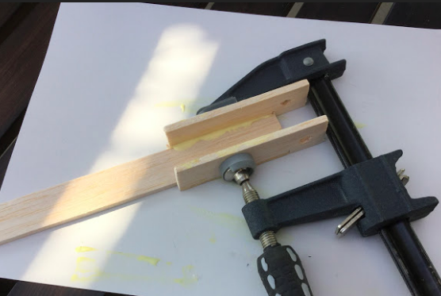
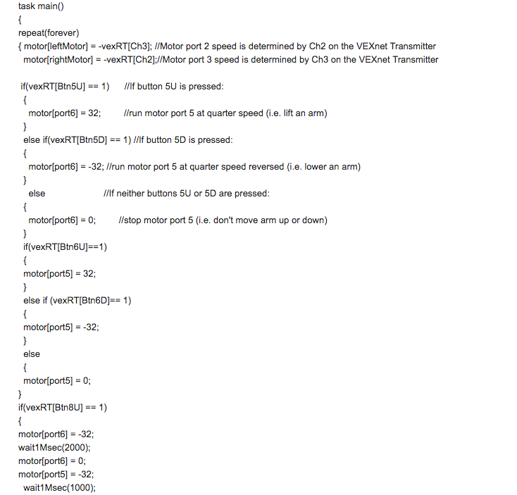
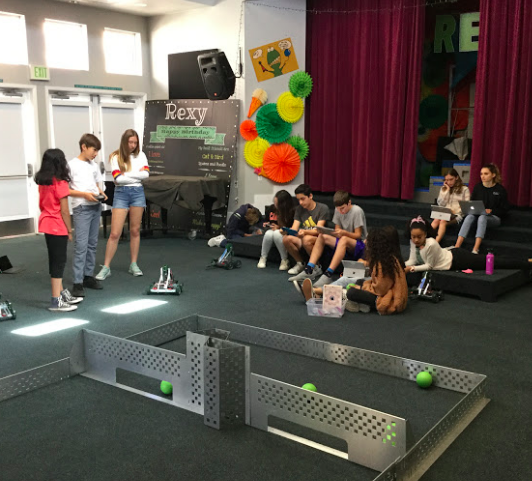
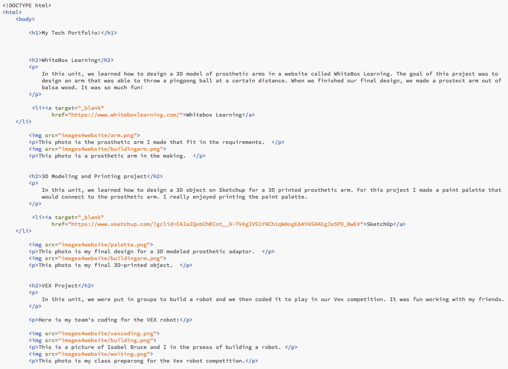

In this unit, we learned how to design a 3D model of prosthetic arms in a website called WhiteBox Learning. The goal of this project was to design an arm that was able to throw a pingpong ball at a certain distance. When we finished our final design, we made a prostect arm out of balsa wood. It was so much fun!
This photo is the prosthetic arm I made that fit in the requirements.
This photo is a prosthetic arm in the making.
In this unit, we learned how to design a 3D object on Sketchup for a 3D printed prosthetic arm. For this project I made a paint palette that would connect to the prosthetic arm. I really enjoyed printing the paint palette.
This photo is my final design for a 3D modeled prosthetic adaptor.
This photo is my final 3D-printed object.
In this unit, we were put in groups to build a robot and we then coded it to play in our Vex competition. It was fun working with my friends.
Here is my team's coding for the VEX robot:
This is a picture of Isabel Bruce and I in the prsess of building a robot.
This photo is my class preparong for the Vex robot competition.
In this unit, we learned how to programand design a webstite We learned how to code StudioWeb and we learned how to make the website pretty on Khan Academy. That is how I made this website! Here is a picture of some my coding for this website:
